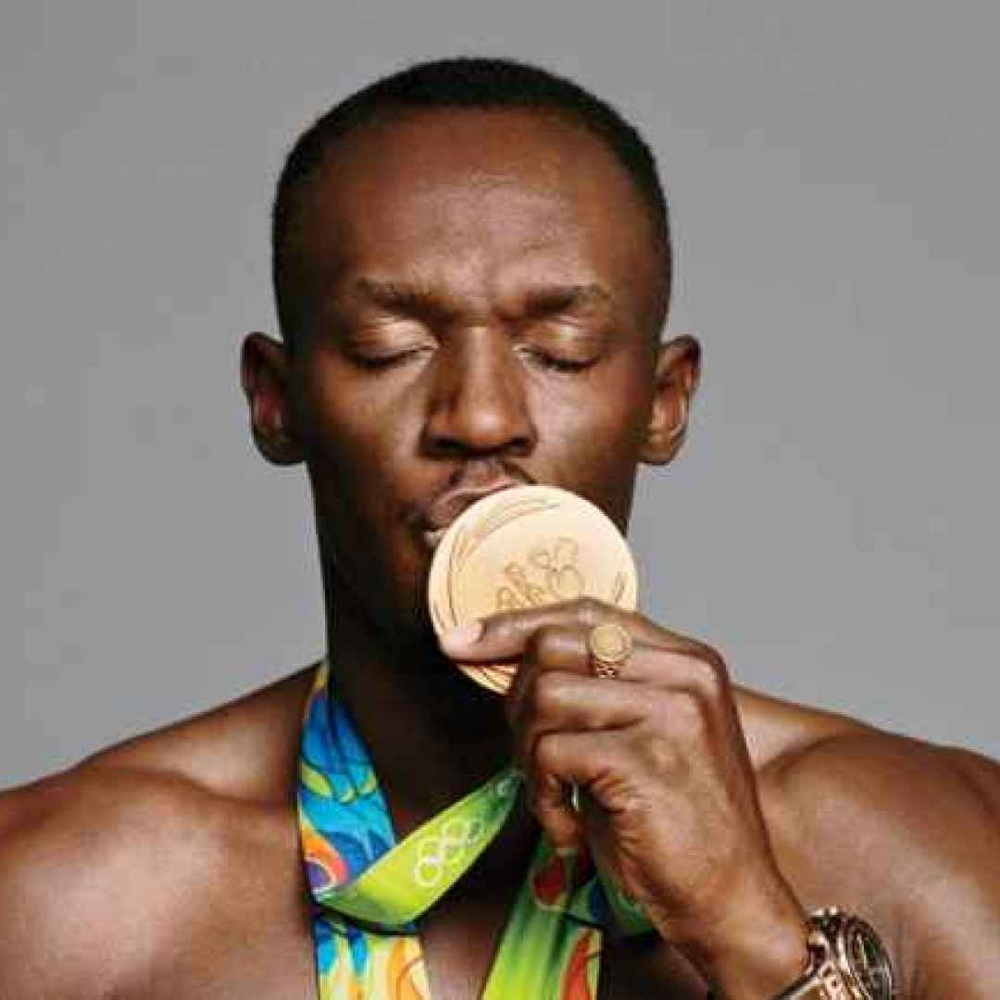
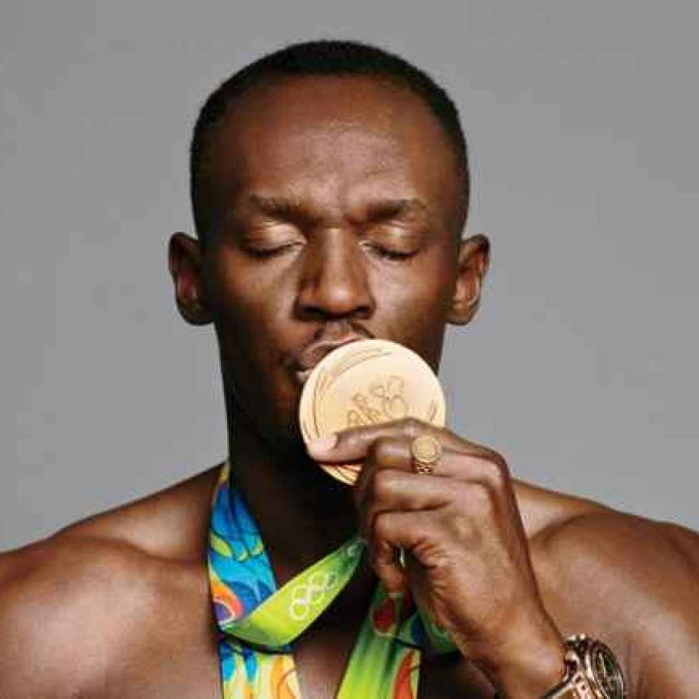

In 2008, Usain Bolt made history at the Beijing Olympics by breaking Michael Johnson's 12-year-old record
in the 200 meters. Finishing in an impressive 19.30 seconds. This victory not only earned him a gold medal but also
set him as the fastest man in the world. In 2009, Bolt continued to dominate by breaking the 100-meter world record at
the World Championships in Berlin. At the 2009 world championships, Bolt shattered his 100-meter record, winning the
event final in 9.58 sec. And four days later he broke his own 200-meter record by 0.11 seconds margin to win a
second gold medal at the world championships. His incredible speed and captivating personality turned him into a global
sports icon, leaving a lasting legacy in athletics. Being widely considered the greatest sprinter of all time.
Image via wikipedia
image via diggita
 
